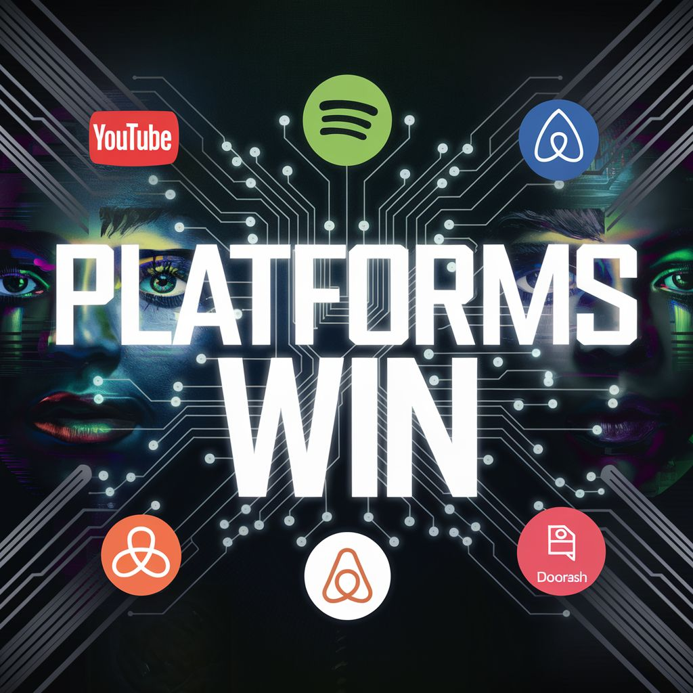

העולם מוכיח שלא צריך להחזיק שום דבר כדי להרוויח הכל. פלטפורמות הן אלו שמנצחות. רוצים הוכחה? בבקשה:
פורסם במקור ב LinkedIn
העולם מוכיח שלא צריך להחזיק שום דבר כדי להרוויח הכל. פלטפורמות הן אלו שמנצחות. רוצים הוכחה? בבקשה:
YouTube הכניסה 31.5 מיליארד דולר 🎥 בלי להחזיק סרטון אחד משלה.
Spotify הכניסה 14.3 מיליארד דולר 🎵 בלי להחזיק שיר אחד בבעלותה.
Airbnb הכניסה 9.9 מיליארד דולר 🏨 בלי להחזיק מלון אחד.
Uber הכניסה 37.2 מיליארד דולר 🚖 בלי להחזיק רכב אחד.
DoorDash הכניסה 8.1 מיליארד דולר 🍔 בלי להחזיק מסעדה אחת.
מה השיטה?
במקום לבנות או להחזיק נכסים – הם בנו קשרים:
חיברו בין אנשים למשאבים, ויצרו ערך ברמה שמעולם לא הייתה אפשרית קודם לכן. שם טמונה החדשנות האמיתית - לא בבעלות, אלא בחיבור.
✨ יש לכם רעיונות איפה עוד אפשר לייצר מהפכה כזו? אשמח לשמוע
